Практика · журнал «ДентАрт» 2019 №2
Фотодинамічна терапія у практиці лікаря-стоматолога
PHOTODYNAMIC THERAPY IN THE PRACTICE OF A DENTIST
Ольга Рисована, Заріна Лалієва,клініка лазерної стоматології; Кубанський державний медичний університет (м. Краснодар, Російська Федерація)
Швидкий розвиток лазерних технологій зумовив появу нових методик із широкими можливостями, які знайшли застосування в різних галузях медицини. Революційною на сьогодні є технологія, що має кілька назв: фотоактивована дезінфекція (ФАД), бактеріотоксична терапія (БТС-терапія), фотодинамічна терапія (ФДТ). Суть цієї технології – дезінфекція або стерилізація тканин організму за допомогою фотосенсибілізуючого компонента і активації лазерним променем відповідної довжини хвилі. ФАД може бути цілком гідною альтернативою антисептикам та антибіотикам при лікуванні локалізованих інфекцій. Цей метод дав вражаючі результати в онкології, отоларингології, дерматовенерології, гінекології. Останніми роками одночасно в кількох країнах фотоактивовану дезінфекцію стали практикувати у стоматології при лікуванні карієсу та його ускладнень, у пародонтології, імплантології, при патологіях слизової оболонки ротової порожнини, у щелепно-лицьовій хірургії.
В етіології запальних захворювань ротової порожнини, таких, як гінгівіт, пародонтит, мікробний фактор є першорядним. Патогенність мікрофлори ротової порожнини пояснюється її вірулентними факторами, здатністю чинити опір імунній системі хазяїна, високою антибіотикорезистентністю, а також тканинною інвазивністю.
При лікуванні запальних захворювань тканин пародонту, поряд з лікарськими препаратами, які найбільш широко використовуються у практичній стоматології, останніми роками стали застосовуватися методи, засновані на терапії лазерним світлом.
Термін «лазер» (laser) складається з перших літер п’яти англійських слів – Light Amplification by Stimulated Emission of Radiation, що означає «посилення світла за допомогою стимульованої емісії випромінювання». Фізичний зміст цього терміну полягає у використанні явища вимушеного (або, інакше кажучи, стимульованого, індукованого) випромінювання для генерації когерентних електромагнітних коливань в оптичному діапазоні спектру.
Лазер – це технічний пристрій, що перетворює електричну енергію на світло оптичного діапазону.
Термін «світло» означає в даному випадку випромінювання не тільки у видимому (380-760 нм), але також і в ультрафіолетовому (10-380 нм) та інфрачервоному (760-340000 нм) діапазонах спектру електромагнітних коливань (рис. 1).
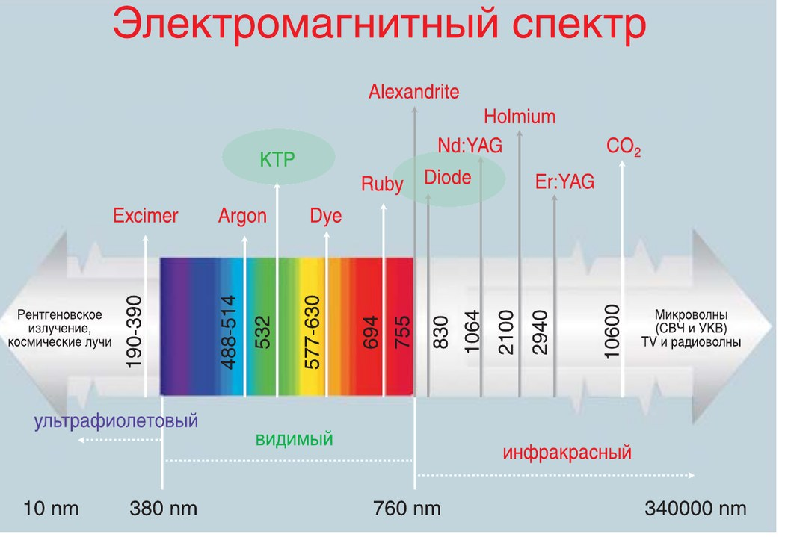
Таке гранично спрощене визначення лазера, однак, цілком достатнє для лікаря, який використовує лазер у клінічній практиці. Для лікаря істотніша, на нашу думку, інформація про властивості, параметри та характеристики самого світла, що виходить з лазера, оскільки саме з ними він зустрічається на практиці. Ще важливішими є уявлення про взаємодію лазерного світла з біотканинами (рис. 2).
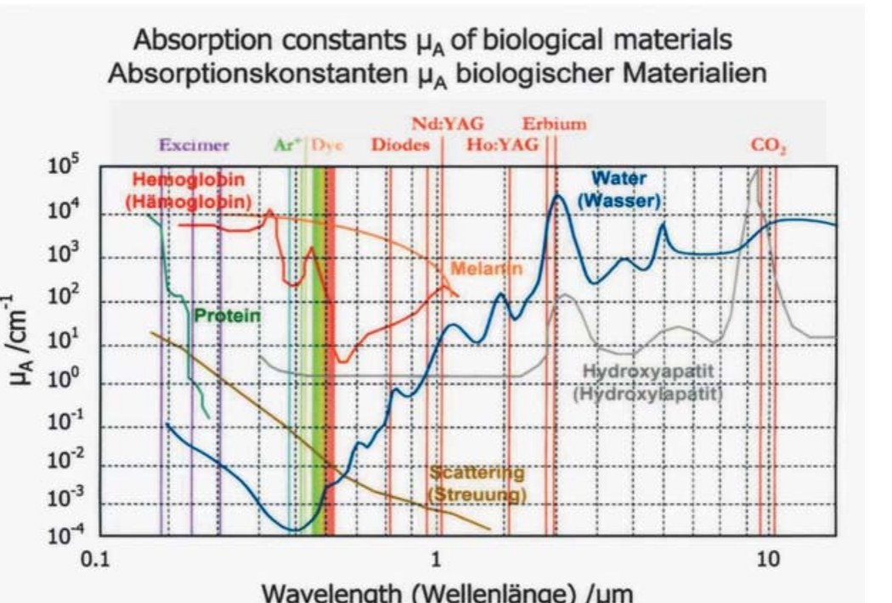
Залежно від робочої речовини і способу її збудження (накачування) інверсія квантової системи може існувати безперервно або деякий час. Тому лазери поділяються на безперервні та імпульсні. Можливі також комбінації безперервного й імпульсних режимів роботи.
Лазери можна класифікувати за типом активного середовища, використовуваного для генерації фотонів.
Розрізняють такі основні види медичних лазерів:
- Газові лазери: СО2-лазер, аргоновий, лазер на парах міді і т. д. Це перші лазери, що випромінюють безперервний промінь світла.
- Твердотільні лазери: рубіновий, Nd: YAG (неодимовий лазер), Er: YAG (ербієвий лазер), KTP (неодимовий лазер), олександритовий і т. д. Ці лазери працюють в імпульсному режимі.
- Рідинні лазери: лазери на барвниках. Імпульсні лазери на барвниках – це лазери з дуже короткою тривалістю імпульсів і тривалими інтервалами між кожним імпульсом. Енергія лазерного випромінювання цих лазерів досить велика.
- Діодні лазери. Мають кілька довжин хвиль, придатних для процедур на м’яких тканинах.
Залежно від робочої речовини розрізняють газові, твердотільні, рідинні та напівпровідникові лазери.
Лазери – це новий тип потужних джерел світла з незвичайними властивостями, за допомогою яких можна отримувати корисні ефекти при взаємодії світла з речовинами, і зокрема з біотканинами. При взаємодії лазерного світла з біотканинами спостерігаються численні фізичні та медико-біологічні ефекти.
Різноманіття структур біотканин визначає різний характер проходження світла крізь них, але основні закономірності зберігаються. Біотканини є для світла середовищем сильного розсіювання із сильним поглинанням.
Перетворення світла на тепло здійснюється передусім на природних ендохромофорах, речовинах, які містяться в біотканинах. Кількість типів хромофорів досить велика. Однак хромофори, які відіграють важливу роль у лазерній хірургії, добре відомі. Це вода, гемоглобін, меланін і рідше протеїн, який є суттєвим для лазерної офтальмологічної хірургії.
Для лазерів, що генерують у спектральному діапазоні 0,7-2 мкм (діодних, неодимових, волоконних), хромофори слабко поглинають світло і глибини його проникнення становлять від кількох міліметрів до кількох десятків мм. Глибина поглинання світла становить для діодного лазера (λ = 810 нм) близько 14 мм. Діодні (λ = 810 нм) лазери не мають яскраво вираженого домінуючого хромофора. Точніше, вони мають по два хромофори, близьких за поглинанням для їх довжин хвиль генерації: вода і оксигемоглобін.
Для лікування запальних процесів застосовують низькоінтенсивне (10-30 мл/Вт) лазерне випромінювання, що не викликає термічного нагрівання і незворотних змін у тканинах. У цьому випадку використовуються такі ефекти взаємодії лазерного світла з живими біотканинами, як вазодилятація кровоносних і лімфатичних судин, посилене збагачення зони впливу киснем та інші терапевтичні ефекти. Але антибактеріальна дія у лазерів низької потужності відсутня, оскільки їх випромінювання не призводить до загибелі мікроорганізмів.
Потужним інструментом антибактеріальної терапії та профілактики гнійно-запальних процесів може стати метод селективного придушення патогенної мікрофлори, сенсибілізованої спеціальними препаратами, що активуються лазерним світлом відносно невеликої (0,5-3 Вт) потужності. Ідея методу полягає у впливі світлової енергії на фотосенсибілізатор, попередньо введений у зону гнійно-запального процесу. Під дією світлової енергії відбувається активація фотосенсибілізатора з подальшим утворенням синглетного кисню і вільних радикалів, які руйнують мембрану мікробної клітини, що, у свою чергу, веде до знищення мікроорганізмів, усуваючи причину розвитку гнійно-запальних процесів.
Ефект селективного придушення світлом сенсибілізованої патогенної мікрофлори отримав назву бактеріотоксичного світлового ефекту (БТС-ефект або в англійській абревіатурі ВТL-ефект від Bacterio Toхicаl Light-ефект). Метод лікування також отримав назву БТС-терапії (BTLT), фотодинамічної терапії (ФДТ/FDT) або фотоактивованої дезінфекції (ФАД/FAD).
Для ФДТ можуть використовуватися будь-які діодні лазери потужністю не менше 0,1 Вт з максимумом довжини хвилі випромінювання 654-670 нм, оснащені роз’ємом для під’єднання оптоволоконного світловода.
У стоматології ФДТ знаходить застосування при лікуванні багатьох захворювань, що мають у своїй основі мікробну природу. При цьому важливим є підбір ефективних фотосенсибилізаторів, здатних забезпечити високу селективність фотохімічних процесів, а також режимів активації цих фотосенсибілізаторів лазерним світлом.
Фотодинамічна терапія у стоматології використовується для:
- лікування та профілактики захворювань пародонту;
- лікування хронічного та гострого гінгівіту;
- післяопераційної реабілітації;
- ендодонтичного лікування;
- лікування та профілактики захворювань слизової оболонки ротової порожнини;
- відбілювання твердих тканин зубів;
- лікування і профілактики ускладнень імплантації: мукозитів та періімплантитів.
Переваги методу фотодинамічної терапії:
- нехірургічний метод лікування захворювань пародонту;
- селективна деструкція патологічних вогнищ (злоякісних, запальних), яка досягається як за рахунок вибіркового накопичення фотосенсибілізаторів у патологічних тканинах, так і за рахунок спрямованості світлового впливу;
- антимікробна ефективність фотодинамічної терапії;
- високий ступінь ефективності лікування;
- нетоксичність фотосенсибілізатора, який має рослинне походження;
- неможливість передозування;
- відсутність побічних ефектів;
- відсутність або мінімізація протипоказань до процедури;
- відсутність звикання.
За минулий період бурхливого розвитку методу ФДТ клінічні випробування пройшли багато фотосенсибілізаторів (ФС). ФС, що застосовуються у клінічній практиці, мають спорідненість з патологічними тканинами, включаючи тканини злоякісних пухлин, вогнища запалення і клітини, інфіковані вірусом. При введенні в організм вони довго затримуються у патологічній тканині і швидко виводяться з навколишніх здорових тканин. Уперше водорозчинні похідні хлорофілу для медичних цілей використав Е. Snyder (США) у 1942 р., і з часом вони стали застосовуватися для профілактики та лікування серцево-судинних захворювань, атеросклерозу, ревматоїдного артриту. Про використання похідних хлоринового ряду для фотодинамічної терапії було заявлено в 1986 р., після чого J. Bommer, Z. Sveida і B. Burnham із США створили моно-L-аспартам хлорин е6 (MACE).
У клінічну практику, наприклад, були введені:
- ФС 1-го покоління з класу порфіринів фотогем (ТОВ «Фотогем»);
- ФС 2-го покоління – фотосенсибілізатор на основі сульфованого фталоціаніну алюмінію (НІОПІК), фотодітазин (ТОВ «Вета Гранд») і радахлорин (ТОВ «Радафарма»).
Два останніх препарати належать до фотосенсибілізаторів хлоринового ряду. Усі згадані вище препарати належать до екзогенних фотосенсибілізаторів.
Ефективність ФДТ різна щодо грампозитивних і грамнегативних бактерій, тобто чутливість бактерії до впливу світла залежить від її заряду. Аніонні і нейтральні ФС ефективно зв’язуються з грампозитивними бактеріями та інактивують їх: опромінення світлом призводить до різкого уповільнення їх росту або загибелі. Причиною, мабуть, є можливість проходження ФС через відносно пористий шар зовнішньої мембрани грампозитивних бактерій і зв’язування з певними центрами всередині бактерії. Такий ефект не спостерігається щодо грамнегативних бактерій, мембрана яких діє як бар’єр на шляху проникнення ФС всередину клітини. Аніонні і нейтральні ФС слабко зв’язуються із зовнішньою мембраною грамнегативних бактерій. Тропність негативно заряджених фотосенсибілізаторів може бути посилена за рахунок зв’язування молекули ФС з катіонною молекулою, або при використанні поверхнево-активних молекул (трис-ЕДТА), або шляхом синтезу кон’югатів ФС з моноклональними антитілами.
Нині в літературі описано велику кількість з’єднань, які фотосенсибілізують мікроорганізми до впливу світла, які можна розподілити на 3 групи:
1-а група – це препарати природного походження: псоралени, які містяться в плодах і коренях рослини псоралеї кістянкової (Psoralea drupacea Bge.) сімейства бобових (Fabaceae), та гіперицин, що міститься в гречці.
2-а група – синтетичні барвники з класу фенотіазинів: метиленовий синій (МС), толуїдиновий синій (ТС) і акридинові барвники.
3-я група – циклічні тетрапіроли, до яких належать ФС з класу фталоціанінів (сульфовані фталоціаніни алюмінію, фталоціанін цинку), порфірини (похідні гематопорфірину, фотофрін, фотосан, фотогем і 5-АЛК-індукований протопорфірин IX) і хлорини (хлорин Т6, Sn(1V)-хлорин е6, різні кон’югати хлорину), ксантенові барвники (еритрозин) та азулен.
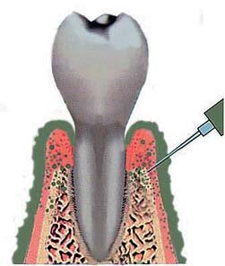
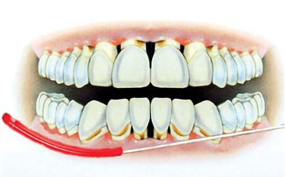
Клінічний приклад лікування пародонтиту
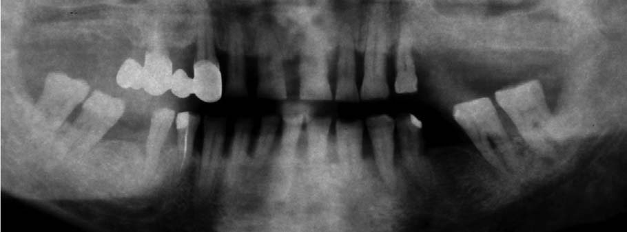
Фотосенсибілізатор використовувався у вигляді розчину і гелю. Вводили препарат за типом інфільтраційної анестезії (рис. 4) з розрахунку 0,1 мл в зоні кожних 3-х зубів (рис. 5).
Джерело лазерного випромінювання (діодний лазер, довжина хвилі 662 нм) налаштовувалося на імпульсний режим (тривалість імпульсу 0,1 с, паузи – 0,1 с). Пацієнт, лікар і асистент одягали спеціальні захисні окуляри. Гнучкий пластиковий світловод довжиною 5 см вводився в ротову порожнину пацієнта і укладався по перехідній складці послідовно в чотирьох квадрантах щелеп (нижня щелепа праворуч, нижня щелепа ліворуч, верхня щелепа праворуч, верхня щелепа ліворуч). У пацієнтів з великими щелепами додатково оброблялися фронтальні ділянки верхньої та нижньої щелеп.
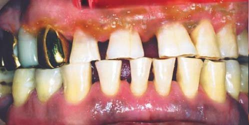
Щільність енергії – 150-200 Дж/см2. Тривалість опромінення (Т) – від 17 хвилин 15 секунд до 23 хвилин (при потужності 0,5 Вт), від 8 хвилин 30 секунд до 11 хвилин 20 секунд (при потужності 1 Вт).
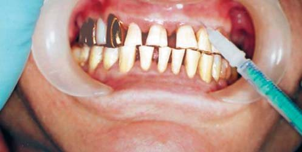
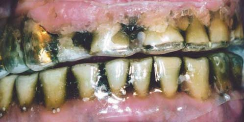
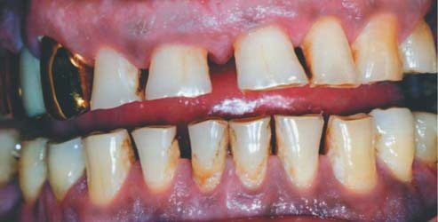
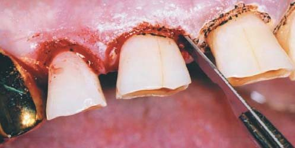
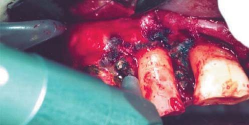
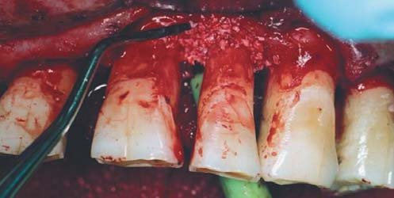
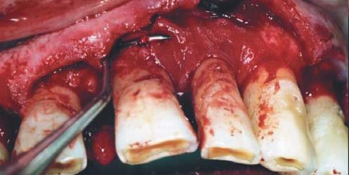
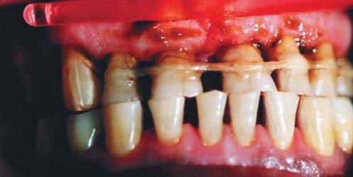
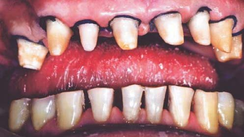
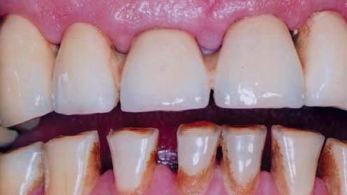
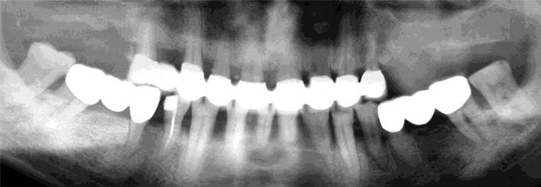
Курс лікування складався з 1 сеансу до клаптикової операції, за необхідності, і 3 сеансів після неї з інтервалом 1-2 дні. Завершувалося лікування виготовленням спеціальної ортопедичної конструкції.
За показаннями при наявності кісткового дефекту використовувалася методика спрямованої тканинної регенерації із застосуванням остеопластичного матеріалу (Bio Oss) і резорбованої мембрани.
Висновки
Таким чином, фотодинамічна терапія запальних захворювань тканин пародонту сприяє прискоренню остеогенезу, активації мінерального обміну, що призводить до збільшення щільності кісткових структур щелеп. Стан мікроциркуляції у м’яких тканинах ротової порожнини після фотодинамічної терапії значно поліпшується. Ефективність ФДТ залежить від чіткого дотримання алгоритмів лікування та параметрів лазерного випромінювання.